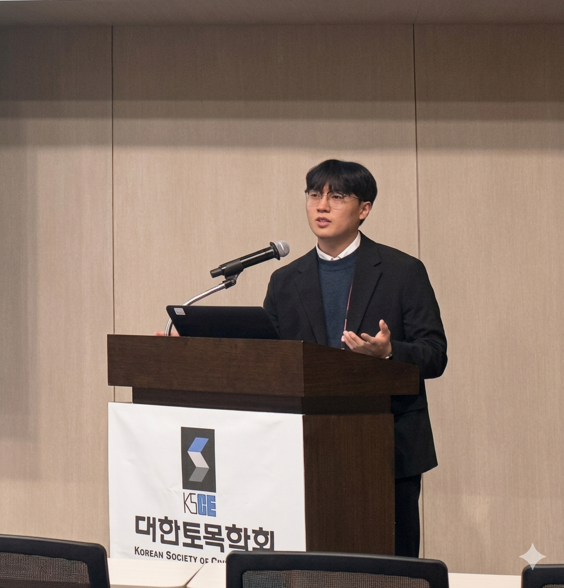
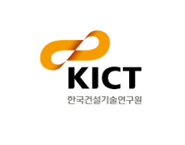

M.S. Student · Hongik University
Jungwon LEE
Hello! I am an M.S. student in the Department of Civil and Environmental Engineering at Hongik University, working under the supervision of Prof. Seungjun AHN. I am also a member of the Data-based Construction Mangement LAB. My research focuses on the digitalization of construction industry and the application of artificial intelligence to construction management and infrastructure maintenance.
Where I Study
M.S. in Civil Engineering
Supervised by Prof. Seungjun AHN
B.S. in Civil and Environmental Engineering
Graduated with honors.
Where I Work
Student Researcher
Supervised by Prof. Seungjun AHN
Visiting Researcher
Supervised by Prof. Daeho KIM

Research Intern
Supervised by Dr. Hyounseok MOON
Research Assistant
Supervised by Prof. Seungjun AHN
What I Work On
Cognitive Agent System for Construction Safety Management
Developing a cognitive agent system that integrates a dynamic ontology foundry, a construction safety knowledge database, and multimodal AI models to automate safety management at construction sites. The system links an autonomous adaptive learning module with an AI–human collaboration framework, enabling real-time risk prediction and automated generation of response measures.
View DetailsDigital Transformation of Construction Standards
Improving the completeness of design and construction standards by analyzing their logical structures and decomposing them into individual digital rule units. An ontology-based database is developed to connect complex cross-referencing relationships among standards, transforming fragmented documents into intelligent data structures that support engineering decision-making.
BIM-based Maintenance of Expressway Slopes and Retaining Walls
Developing information management standard frameworks and BIM authoring guidelines tailored for geotechnical facilities such as cut slopes and retaining walls. A web and mobile-compatible maintenance prototype is built using BIM models from pilot sections, establishing short- and mid-term strategies for the digital transformation of highway maintenance.
Knowledge Graph for Construction Job Safety Analysis
Construction safety management guidelines exist as fragmented documents, making it difficult to identify cross-references and limiting practical usability. This research leverages natural language processing and knowledge graph databases to integrate text-based guidelines into a unified, queryable knowledge graph that enhances accessibility and supports evidence-based safety decision-making.
What I've Published
Performance comparison of retrieval-augmented generation and fine-tuned large language models for construction safety management knowledge retrieval
PageRank algorithm-based recommendation system for construction safety guidelines
Development of a Graph-Based Image-Text Multimodal Retrieval Framework for BIM Guidelines
System Requirements Analysis for a Digital Twin Platform for Geotechnical BIM-Based Maintenance
Ontology-Based Structuring of Construction Standards: Utilization through Graph DB
The Proposed Framework for Building a Multi-modal Model for Hazard Analysis
Development of a Generative AI Prototype on Large Language Models
Developing a Prototype of Construction Safety Guideline Recommendation System
BIM-based Platform for Maintenance of Geotechnical Infrastructure in Express Way
Research on Building an Ontology (Knowledge Graph) to Support the Difficulty Assessment of Tender Documents
Development of AI Prototype for Generating Construction Safety Guidelines Through Fine-Tuning of Large-Scale Language Model
Proposal of a Workflow Model for Generating a Construction Safety Guideline Knowledge Graph
Construction Site Safety Management System
A construction site safety management system integrating multimodal AI models to analyze hazard factors from site imagery, identify risks based on process information and accident types, and automatically generate preventive measures.